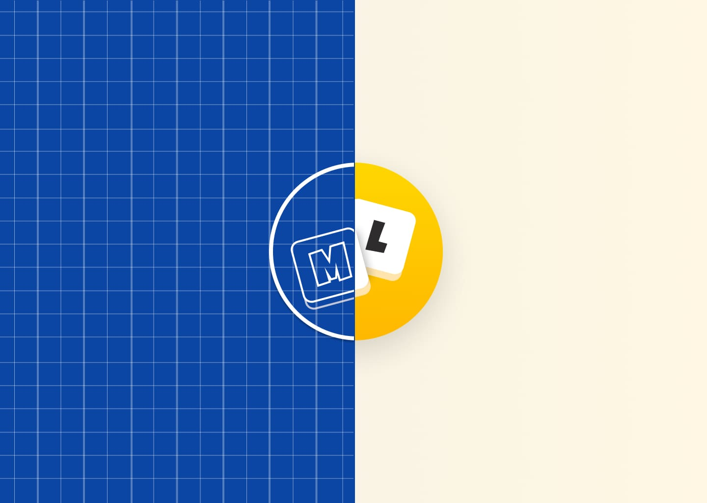

Report: Finalizing MadLibs 2.0
For my final project, I collaborated with Kevin Duke for a code review of the Flip button feature in my Mad Libs assignment. To recap, I'm enhancing the Flip button's functionality. A frequent issue noted was the ability of players to flip the index card without completing all input fields. This enhancement is more complex than it appears, requiring checks to ensure all input fields are filled before flipping the card and preventing field checks on the card's reverse side.
Kevin Duke's expertise in code review and UI/UX suggestions is invaluable. With over five years in the frontend development sector, creating professional websites from scratch, his skills in programming and usability studies are exceptional, surpassing many of his peers. Thus, his insights and review for the flip button coding are highly beneficial.
Discussion
Upon sharing my code with Kevin, he remarks that my javascript for the new flip button and input check logic is clean. There are not that many things that need to be refactored. But he suggested that I use let and const Instead of var. Modern JavaScript encourages the use of let and const for variable declarations to avoid hoisting issues and to make the code more readable.
Line 56 contains code that goes unused. I was experimenting with different button states, but I forgot to remove it. Removing it improves code efficiency as it doesn't have to parse this state.
Kevin pointed out my event listener loop could be revamped for better performance.
Instead of one listener per input, he recommended attaching a single listener to the parent element. This "event delegation" technique cuts code length and boosts flexibility, letting me add new fields with minimal fuss.
Overall, Kevin's advices and techniques made my improved MadLibs worthy of the "2.0" version. It's a whole lot cleaner and concise, making it more flexible for future features while making it less prone to bugs. I am thankful for his efforts and expertise to guide me through building a better Mad Libs.
In addition to the button, I've also improved the page's accessibility. I made the website mobile compliant so that people on the go can fill out Mad Libs with no trouble. I've also increased the font's size and made it easier for those to access the Help button.
Mad Libs 2.0 can be accessed here.